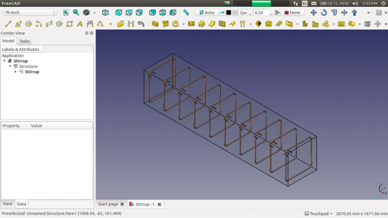
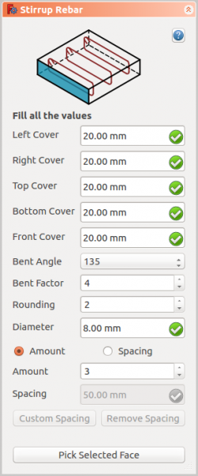

Arch Rebar Stirrup
|
| Menu location
|
| Arch → Rebar tools
|
| Workbenches
|
| Arch
|
| Default shortcut
|
| None
|
| See also
|
| Helical Rebar
|
|
|
| This command is part of the Reinforcement AddOn, that you can install via menu Tools → Addons Manager
|
|
Description
The Stirrup Rebar tool allows user to create a stirrup reinforcing bar in the structural element.

How to use
- Create a structure element
- Select any face of the structure
- Then select Stirrup Rebar from the rebar tools
- A task panel will pop-out on the left side of the screen as shown below 
- Select the desired orientation
- Give the inputs like left cover, right cover, top cover, bottom, front cover, bent angle, bent factor, rounding and diameter of the rebar
- Select the mode of distribution either amount or spacing
- If spacing is selected, a user can also opt for custom spacing
- Pick selected face is used to verify or change the face for rebar distribution
- Click OK or Apply to generate the rebars
- Click Cancel to exit the task panel
Properties
- DATAFront Cover: The distance between rebar and selected face.
- DATARight Cover: The distance between the right end of the rebar to right face of the structure.
- DATALeft Cover: The distance between the left end of the rebar to the left face of the structure.
- DATABottom Cover: The distance between rebar from the bottom face of the structure.
- DATATop Cover: The distance between rebar from the top face of the structure.
- DATABent Angle: Bent angle defines the angle at the ends of a stirrup.
- DATABent Factor: Bent Factor defines length of stirrup end.
- DATAAmount: The amount of rebars.
- DATASpacing: The distance between the axes of each bar.
Scripting
The Stirrup Rebar tool can by used in macros and from the python console by using the following function:
makeStirrup(LeftCover, RightCover, TopCover, BottomCover, FrontCover, BentAngle, BentFactor, Diameter, Rounding, AmountSpacingCheck, AmountSpacingValue, Structure, Facename)
- Adds a Stirrup reinforcing bar object to the given structural object.
- If no Structure and Facename is given, it will take user selected face as input.
- Here CoverAlong argument is having type tuple.
- Returns the new Rebar object.
Example:
Creating Stirrup rebar.
import Arch, Stirrup
structure = Arch.makeStructure(length=1000.0, width=400.0, height=400.0)
structure.ViewObject.Transparency = 80
FreeCAD.ActiveDocument.recompute()
rebar = Stirrup.makeStirrup(20, 20, 20, 20, 20, 135, 4, 8, 2, True, 10, structure, "Face6")
Changing properties of Stirrup rebar.
import Stirrup
Stirrup.editStirrup(rebar, 20, 20, 20, 20, 50, 90, 4, 8, 2, True, 6, structure, "Face6")
{kind=link}
{kind=link}
{kind=link}